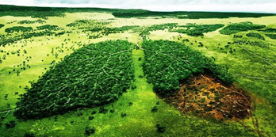

|
UNA CONVIVENCIA ARMÓNICA TRAE CONSIGO COSAS BUENAS, Y ES ALGO QUE TODOS PODEMOS TENER | |
| HISTORIA |
| MOVIMIENTO SOCIAL ECOLÓGICO | |
¿Qué es el movimiento social ecologico? |
|
| Es una organización social y política de carácter global cuyo máximo cometido es la defensa del medio ambiente, promoviendo para ello la educación ambiental, la presión y denuncia de las iniciativas no responsables ecológicamente y las políticas públicas conservacionistas. |  |
¿En qué consiste este movimiento? |
|
El ecologismo aspira a despertar el compromiso de todos los sectores de la sociedad para marchar hacia una sociedad sustentable, es decir, que conviva de manera armónica con el ecosistema y le garantice un futuro medioambiental y de salud a la humanidad. |
 |
¿Cuál es el origen de dicho movimiento? |
|
| Tiene su origen a partir de la segunda mitad del siglo XX. Se fundamenta en la defensa y la protección del medio ambiente como eje central de cualquier acción política. |  |
Los objetivos del movimiento social ecológico se pueden resumir en: |
|
|
| Juego educativo sobre el movimiento social ecológico |
|
Autores: Angel Pastaz, Melany Guaytarilla, Juan Mejía, Damaris Tulcanaza 2020 - 2021 2do Bachillerato Técnico Informático Unidad Educativa Municipal Técnica y en Ciencias "San Francisco de Quito" |
|